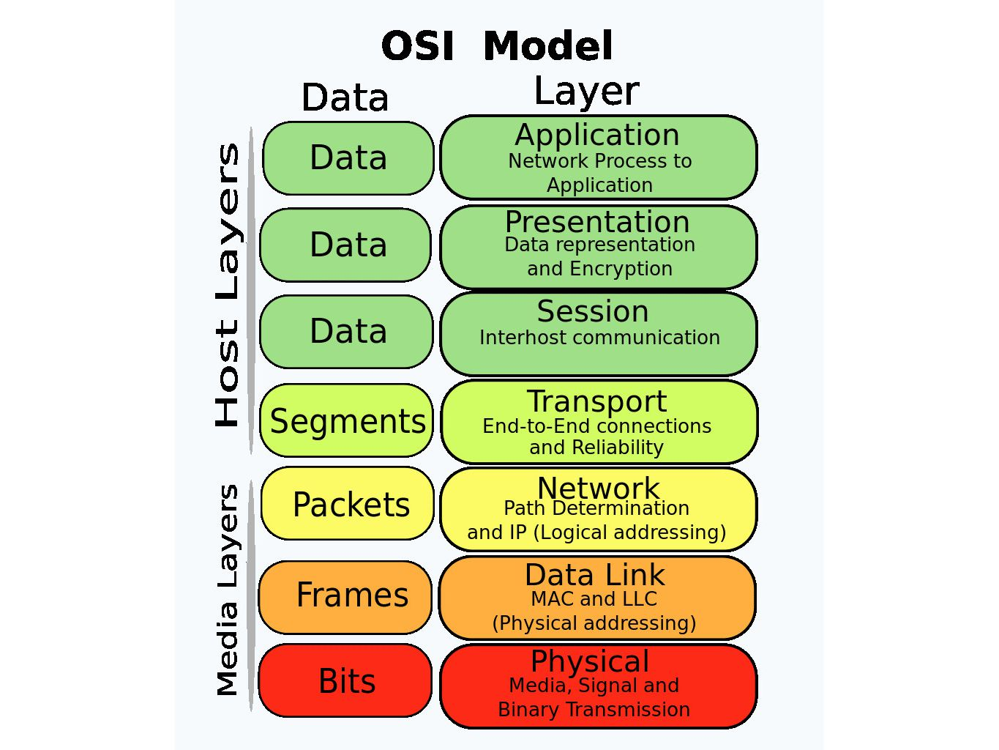
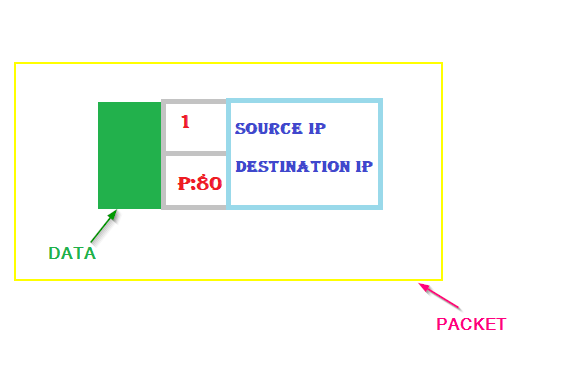
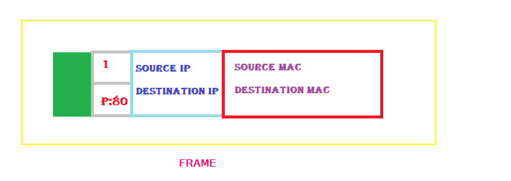
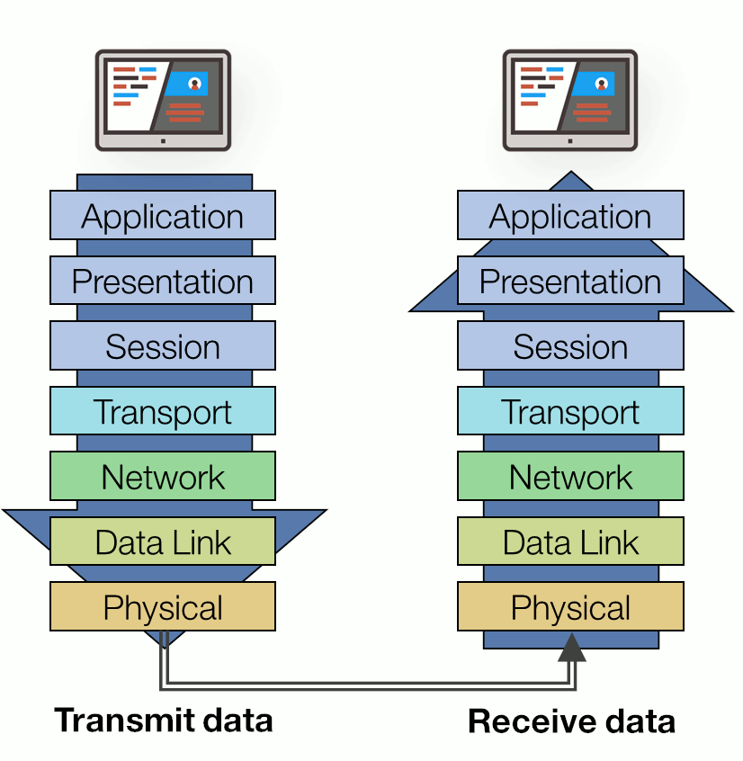
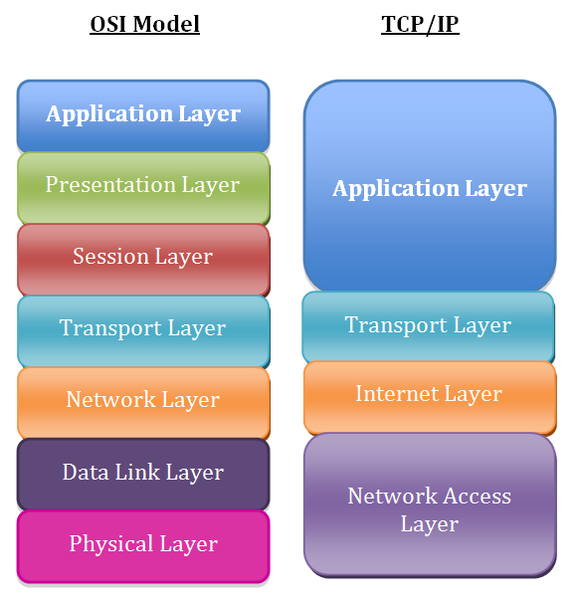

In this blog, we'll be going to study what OSI and TCP/IP Model is and why do we even care about it? Ever wondered how data/information is fetched from the server and presented on your screen? So be ready to dive deep in the technicality behind the network. Don’t worry it gonna be fun and informative.
Let me take you back in the early 1960s when there were computers but they don't know how to communicate with each other. So what happened next is companies like Apple, IBM, etc started developing technologies to make their respective computers communicate with each other. They were successful but this gave rise to a new problem for any organization to have computers that can communicate with each other need to have the device from the same manufacturer as each of them have a completely different algorithm/model/way defined to make their computers communicate.
What if I ask you that you will only be able to connect your smartphone with your smartwatch if both of them are of XYZ company. Pretty dumb right? Ignore Apple xD
Yeah! must be a similar reaction to the big business owners.
Then at that point in time people thought to create a standard set of rules(model) so that each and every computer which exists on this planet can communicate with each other. Finally we come up with two models namely:
1)OSI Model (More descriptive to understand)
2)TCP/IP Model (Practically used)
TCP/IP model is what is used practically nowadays but the OSI model is considered as the best place to start with and we'll also start from here with in-depth understanding.
OSI Model
The Open System Interconnection model (OSI) is a conceptual model that characterises and
standardised the communication functions of a telecommunication or computing system without regard to its underlying internal
structure and technology.
Let me show you a diagram:

Let's learn the sequence before understanding it. Repeat after me : "Please Do Not Throw Sausage Pizza Away".
Did you notice the bolden characters? Yes, it's a way to learn the sequence and believe me it's gonna help you later.
So I want you to understand one more thing that data at different layers are in different forms which is known as Protocol Data Unit (PDU). Now let's move top to down in the OSI stack.
1. Application Layer
This layer deals with the networking applications protocols like HTTP, FTP IRC,SSH etc.<-------- Here PDU is in the form of User Data.------------->
2. Presentation Layer
This layer is responsible for presenting the data in the required format which may include Encryption & Decryption. Protocols used here are SSL, SSH, IMAP FTP etc<-------Here PDU is in the form of Formatted Data.--------->
3. Session Layer
This layer establishes,Manages and terminates the session between two hosts. APIs , SOCKETS function here!<-------Here PDU is in the form of Formatted Data.--------->
4. Transport Layer
This layer breaks up the data from the sending host and then reassembles it in the receiver.It's also used to insure reliable data transport across the network.TCP , UDP protocol is decided here.Three Important steps that occur here are:
Step 1: Segmentation
Step 2: Assigning Sequence Number
Step 3: Assign port number according to TCP or UDP connection.
<-------Here PDU is in the form of Segment.--------->
5. Network Layer
This layer makes the "best path Determination" (Routing) decision based on logical Address (IP Address). IP, ICMP,IPSec function here!<-------Here PDU is in the form of Packets.--------->
6. Data Link Layer
This layer provides reliable transit of data across a physical link. Makes decisions based on physical addresses(MAC Address). Ethernet, PPP, Switch, Bridge function here!<-------Here PDU is in the form of Frame.--------->
7. Physical Layer
This layer converts the whole data into binary format. And physical devices like Ethernet, Optical fibre Cable function here!<-------Here PDU is in the form of Binary.--------->
Now as the data move from top to down it's encapsulated with the information shown above and as it reaches to the destination it's being decapsulated as it moves up.
So by this time you must be able to understand most of the stuff but I highly encourage you to check out the internet as there is ample of resources over this.
TCP/IP Model
You must be thinking that we already have a pretty nice OSI model so what is the need of TCP/IP then. So the answer is that TCP/IP is more practicla and widely implemented plus accepted. By the way it is much more compact than OSI and similar to OSI. Let me show you:
 So as you can see that in TCP IP we combine some layers of OSI and make it as one layer that is all the processing is done in that one layer only.As a hacker perspective one should know how data is travelling between two computers via wire or wireless so that he/she can check for the vulnerabilities found in the path.
Resources
OSI Model Video
OSI Vs TCP Comparison Video